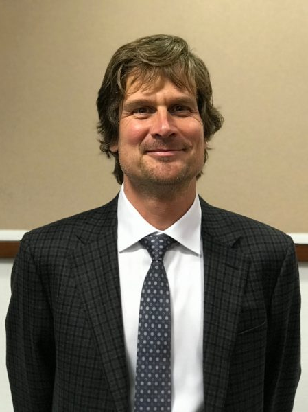
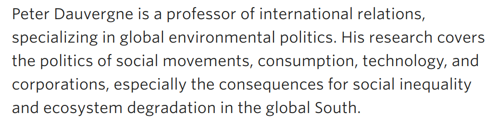
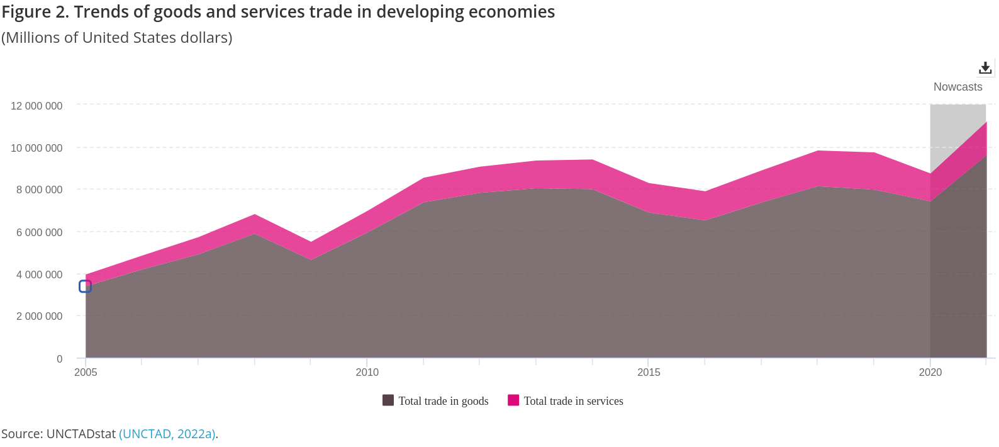
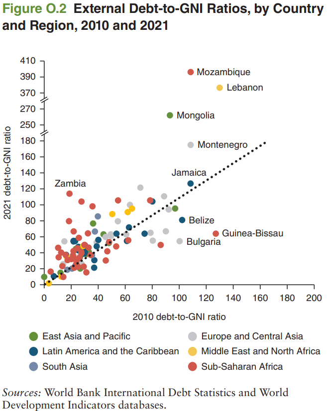
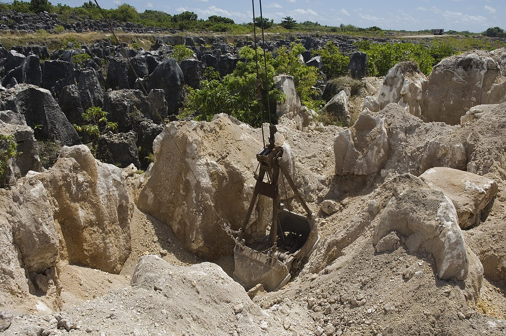
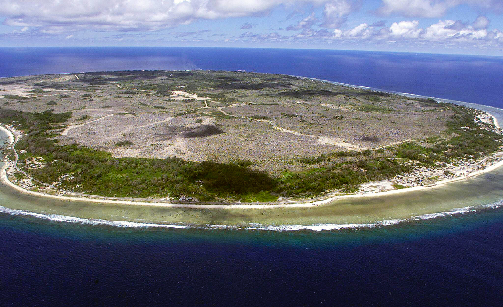
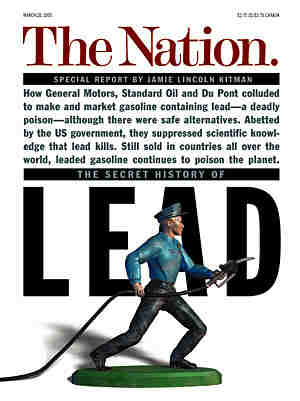
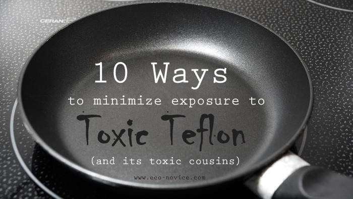
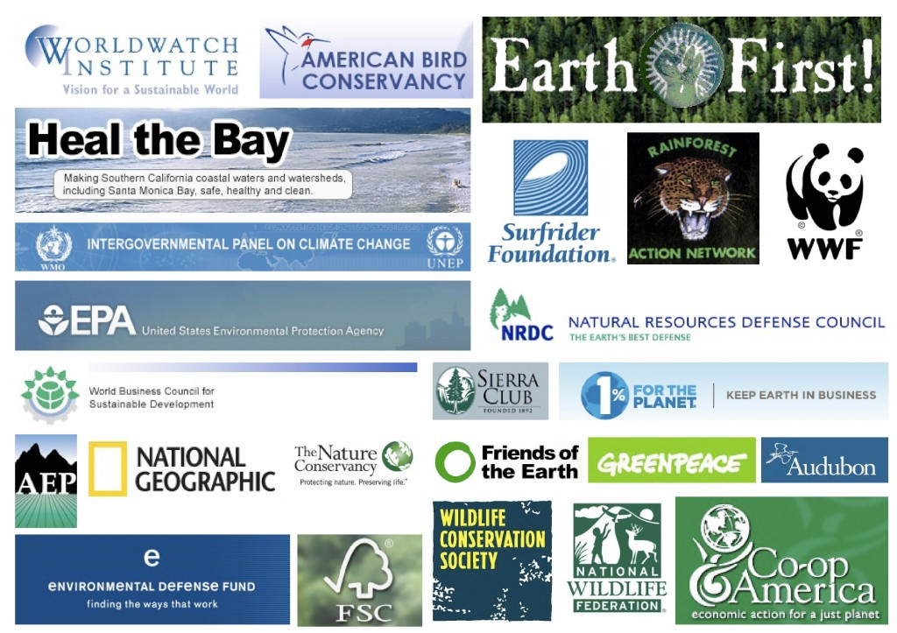

Propose a policy to address your selected environmental problem that balances the interests of the relevant stakeholders against the constraints of established institutions and uncertainty.
Complicating Factors to Consider When Designing Your Policy
Risk aversion (acceptance)
Temporal discounting and uncertainty
Collective action problems and free-riding
Inequality
Greenwashing
Peter Dauvergne


Greenwashing and Eco-Capitalism
…over the past two decades the pendulum of environmentalism has swung too far toward cooperation and reconciliation with the institutions of capitalism, and to make more of a global difference the mainstream of the environmental movement needs to pursue more transformative, ecological and justice-oriented goals (9).
1. Globalisation is imperialism by another name
1. Globalisation is imperialism by another name
1. Globalisation is imperialism by another name

1. Globalisation is imperialism by another name

The Exploitation of Nauru
1. Globalisation is imperialism by another name
The Exploitation of Nauru


1. Globalisation is imperialism by another name
Environmentalism
+
Capitalism
=
Bad Ecological Outcomes
Environmentalism
+
Capitalism
=
Bad Ecological Outcomes
3. We are rapidly consuming the world while feeling better and better about our choices
4. Legal risk-taking by corporations is rampant and incredibly dangerous
4. Legal risk-taking by corporations is rampant and incredibly dangerous


5. “Environmentalism of the Rich”

“Environmentalism of the Rich”
“More important, however, has been the innate power of consumer capitalism to distort and assimilate counternarratives and countermovements, especially critiques of wealth and economic growth” (p76).
Globalisation = imperialism
Environmentalism + Capitalism = Bad Outcomes
“Green” consumption is still consumption
Corporate risk-taking is rampant and dangerous
“Environmentalism of the Rich”
…
Therefore, the mainstream of the environmental movement needs to pursue more transformative, ecological and justice-oriented goals.
Globalisation = imperialism
Environmentalism + Capitalism = Bad Outcomes
“Green” consumption is still consumption
Corporate risk-taking is rampant and dangerous
“Environmentalism of the Rich”
Eco-consumerism isn’t working
Therefore, the mainstream of the environmental movement needs to pursue more transformative, ecological and justice-oriented goals.
Globalisation = imperialism
Environmentalism + Capitalism = Bad Outcomes
“Green” consumption is still consumption
Corporate risk-taking is rampant and dangerous
“Environmentalism of the Rich”
Eco-consumerism isn’t working
Corporate money buys more cover for bad behavior than it provides in better processes
Therefore, the mainstream of the environmental movement needs to pursue more transformative, ecological and justice-oriented goals.
Dauvergne’s Policy Arguments
People must consume less
Create new laws to protect ecosystems and human rights
Measures to end extreme inequality and stop corporate pillaging
Far higher levels of precaution when introducing new technologies and chemicals.
Carbon neutral energy base with fair distribution
People must accept responsibility for the consequences of the sources of their wealth, owning up to historical wrongs and to contemporary inequities so new rules and institutions can be put in place
Controls must be placed on the institutions of overconsumption and wasteful consumption
“a politics of global sustainability must respect nature, demand intergenerational equity, advance environmental justice, and promote fair economics without irreparably harming present or future life.”
Complicating Factors to Consider When Designing Your Policy
How does greenwashing and eco-capitalism complicate your efforts to address your specific environmental problem?